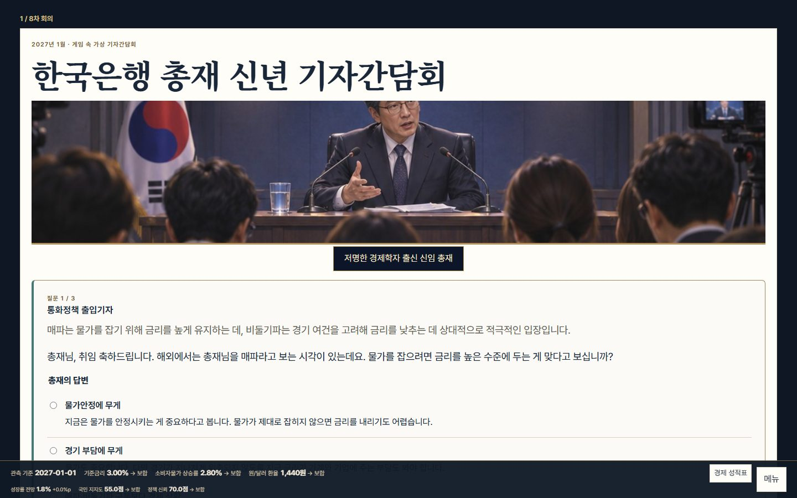

About the game
You become the governor of the Bank of Korea and set the policy rate at eight Monetary Policy Board meetings over 2027. You decide whether to prioritize prices, growth, household credit or financial risk, and the governor and six board members settle the rate by vote.
Setting the rate is not the end. You answer reporters at a press conference, read the market reaction and a newspaper front page, then move on to the next meeting. After the eighth meeting, a 2029 evaluation looks back at your choices and their results.
The 2027 figures are fictional. How and when the in-game indicators change is not a forecast of the real economy, and the press conference is a fictional in-game setting.
How it plays
Start as a distinguished economist (models and statistics), an economic bureaucrat (crisis management and policy coordination) or a politician with economic expertise (people's livelihoods and negotiation). Each approaches decisions differently, for example checking model paths against observed indicators, separating the effects and side effects of each policy tool, or comparing the costs households and firms actually bear.
Pick a starting situation or get one at random: the base scenario, War on Prices, Shadow of Recession, A Wobbling Won, A Warning on Debt or The Semiconductor Paradox. Each scenario has different starting inflation, growth, exchange-rate and risk scores, a core dilemma and press-conference issues.
At your first appearance after taking office you choose answers to three questions from monetary policy reporters, such as whether you are a hawk or a dove.
Review the economic outlook report on the desk, BOK Watch on the monitor, government contacts by phone and policy records in the file cabinet, then take your meeting materials into the board meeting. Urgent economic news or contact from the government can break in before the meeting.
Set the goal to prioritize among prices, growth, household credit and financial risk, and compare outlooks for each rate proposal. Persuade board members if needed, then submit a proposal; the governor and six members decide by vote. In February, May, August and November you also present a rate outlook for six months ahead.
After answering reporters you read the market reaction and a newspaper front page, then head to the next meeting. The economic scorecard at the bottom shows trends and targets, and you can save from the menu and resume from the title screen.
Screens

2. Choose a scenario: where do you start?

3. New Year press conference: answer three questions

4. Governor's office: review materials before the meeting

5. The board meeting: the governor and six members vote
How the economic model works
To make the game more strategic, the real transmission lag of monetary policy is compressed to 1-2 months. Coefficients and starting states are scenario assumptions, and changes in the in-game indicators are not forecasts of the real economy.
Tech and how it was made
Status
Open to everyone right away. You can save your progress from the menu and resume from the title screen.